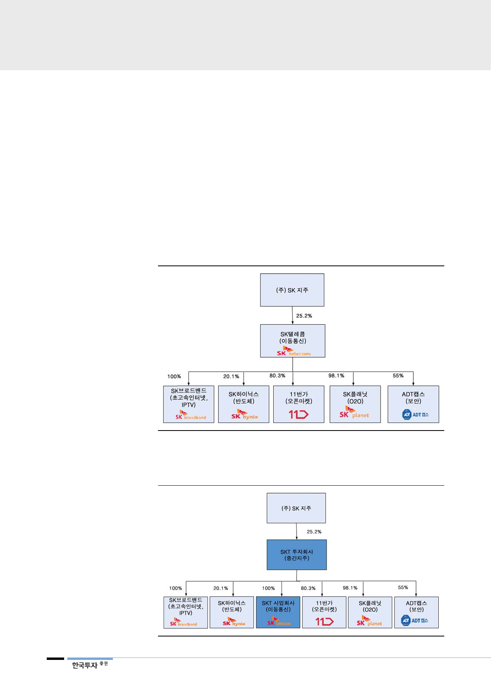

V. 지배구조 변화와 배당 메리트
비통신 사업 M&A 활성화를
위한 지배구조 변화 예상
1. 지배구조 변화: 물적 분할 가능성
SK텔레콤은 지배구조 변경을 검토 중이다. 이동통신 사업부문을 자회사로 물적
분할하는 방안이 유력하다. 물적 분할의 장점은 두 가지다. SKT 투자회사는 외국
인 지분한도 제한이 없고 정부 규제가 적어 콘텐츠, 플랫폼 등 미래 성장사업
M&A가 용이하다. 이는 비통신 사업 확대를 통해 성장 동력을 마련하려는 SK텔
레콤의 전략을 실현하는 데 적합한 지배구조다. 다만 SK텔레콤 주주는 보유 주
식이 가치주, 배당주인 SK텔레콤 통신업체에서 통신, 반도체, 커머스, 보안 자회
사를 거느리는 투자회사로 바뀌게 되어 일부 주주구성의 변화는 불가피할 것이다.
[그림 15] 지배구조 개편 전(현재)
주: 1. 11번가: 오픈 마켓, e-commerce 쇼핑 플랫폼
2. 시럽: 온라인, 오프라인(O2O) 커머스 플랫폼
자료: SKT, 한국투자증권
[그림 16] 물적 분할 후
자료: SKT, 한국투자증권
14